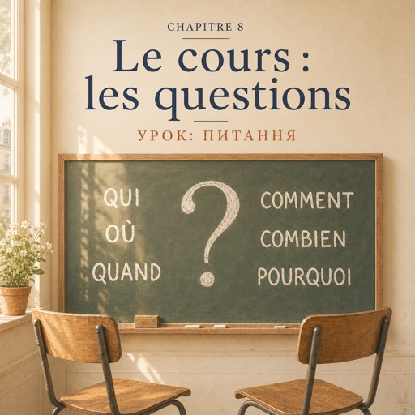

Le jeudi 11 septembre, dix-huit heures trente — четвер, 11 вересня, о пів на сьому вечора
Madame Forestier pose la boîte sur la première table. Les téléphones tombent dedans.
Мадам Форестьє ставить коробку на перший стіл. Телефони падають туди.
— Ce soir, personne n'écrit. Ce soir, tout le monde demande.
— Сьогодні ніхто не пише. Сьогодні всі питають.
Elle écrit six mots au tableau, très grands.
Вона пише на дошці шість слів, дуже великими літерами.
QUI. OÙ. QUAND. COMMENT. COMBIEN. POURQUOI.
ХТО. ДЕ. КОЛИ. ЯК. СКІЛЬКИ. ЧОМУ.
— Avec ça, vous pouvez vivre en France. Sans ça, vous ne pouvez rien.
— З цим ви можете жити у Франції. Без цього ви не можете нічого.
Puis elle écrit deux phrases.
Потім вона пише два речення.
Vous travaillez ? / Est-ce que vous travaillez ?
Ви працюєте? / Чи ви працюєте?
— C'est la même question. La première, c'est la rue.
— Це те саме питання. Перше — це вулиця.
— La deuxième, c'est l'école, le bureau, le médecin. Les deux sont correctes.
— Друге — це школа, офіс, лікар. Обидва правильні.
Rafael lève la main.
Рафаель піднімає руку.
— Madame, est-ce que vous êtes mariée ?
— Пані, а ви заміжня?
La classe rit. Madame Forestier ne rit pas, mais ses yeux, si.
Клас сміється. Мадам Форестьє не сміється, а от її очі — так.
— Non. Question suivante.
— Ні. Наступне питання.
Elle écrit encore quatre choses au tableau : NE... PAS. NE... JAMAIS. NE... RIEN. NE... PERSONNE.
Вона пише на дошці ще чотири речі: НЕ. НІКОЛИ. НІЧОГО. НІКОГО.
— Et maintenant, par deux. Dix questions chacun. J'écoute.
— А тепер у парах. По десять питань кожному. Я слухаю.
Natalia se retourne. Derrière elle, il y a Nour.
Наталя обертається. Позаду неї Нур.
— Bonjour. Est-ce que vous travaillez ?
— Добрий вечір. Ви працюєте?
— Pas encore. Je suis médecin en Syrie. Ici, je ne suis rien. Pour le moment.
— Ще ні. У Сирії я лікарка. Тут я ніхто. Поки що.
Elle dit ça calmement, sans colère.
Вона каже це спокійно, без злості.
— Pourquoi vous êtes venue en France ?
— Чому ви приїхали до Франції?
— Ma sœur habite à Lyon. Et vous ?
— Моя сестра живе в Ліоні. А ви?
— Mon mari... non. Pardon. Je ne suis pas mariée. Je suis venue seule.
— Мій чоловік… ні. Вибачте. Я не заміжня. Я приїхала сама.
Nour parle lentement. Natalia comprend presque tout. Presque.
Нур говорить повільно. Наталя розуміє майже все. Майже.
— Je ne comprends pas. Vous pouvez répéter ?
— Я не розумію. Можете повторити?
Nour répète. Plus lentement. Et ça marche.
Нур повторює. Повільніше. І це спрацьовує.
Elles posent dix questions. Puis vingt. Puis elles ne comptent plus.
Вони ставлять десять питань. Потім двадцять. Потім перестають рахувати.
Personne ne dit un mot d'anglais. Personne n'essaie même.
Ніхто не каже жодного слова англійською. Ніхто навіть не пробує.
À vingt heures trente, madame Forestier ouvre la boîte.
О пів на дев'яту мадам Форестьє відкриває коробку.
— Vous avez parlé vingt minutes. Vingt minutes, avec des fautes. C'est exactement ce qu'il fallait.
— Ви говорили двадцять хвилин. Двадцять хвилин, із помилками. Саме це й було потрібно.
Dans la rue, Natalia s'arrête.
На вулиці Наталя зупиняється.
— Je n'ai jamais parlé autant, dit-elle à personne.
— Я ніколи стільки не говорила, — каже вона нікому.
Dans le métro, elle ne met pas ses écouteurs.
У метро вона не вдягає навушники.
Elle écoute les gens. Elle ne comprend pas tout.
Вона слухає людей. Вона розуміє не все.
Mais elle écoute.
Але вона слухає.